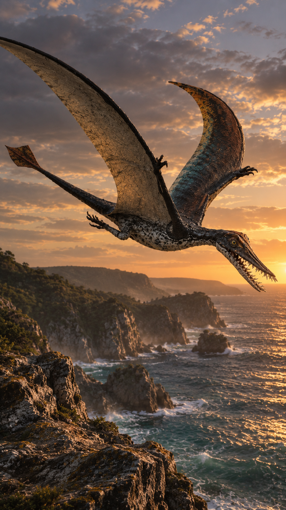
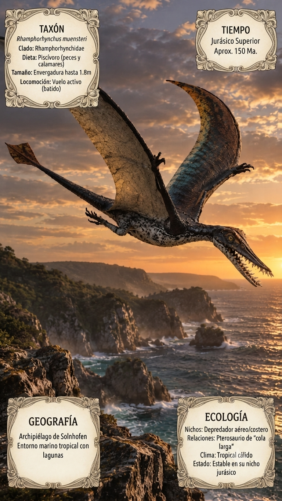
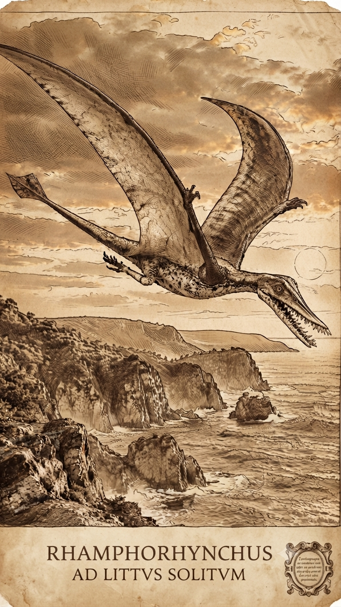
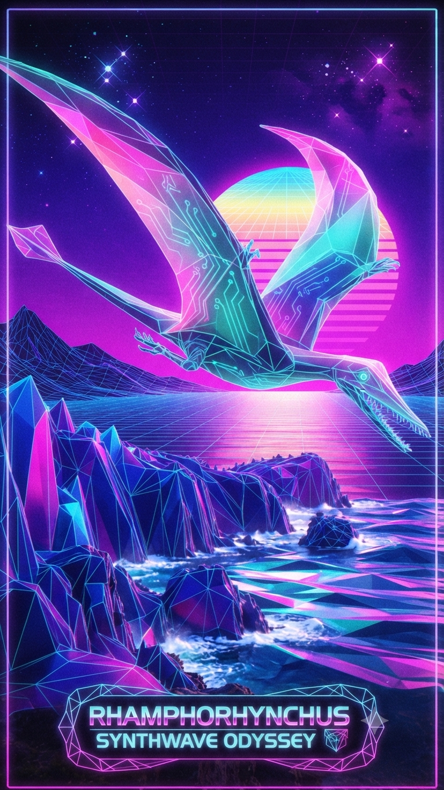

Paleoficha de PalEntropía




TAXÓN:
Rhamphorhynchus muensteri
CLADO:
Rhamphorhynchidae (Pterosauria basal)
DIETA:
Piscívoro (capturador de peces y calamares mediante vuelos rasantes).
TAMAÑO:
Envergadura alar de hasta 1,8 metros; cuerpo ligero.
LOCOMOCIÓN:
Vuelo activo mediante batido; cola larga terminada en una veleta romboidal que proporcionaba estabilidad.
TIEMPO:
Jurásico Superior, aproximadamente hace 150 millones de años.
GEOGRAFÍA:
Archipiélago de Solnhofen, Europa central.
EQUIVALENCIA PALEOGEOGRÁFICA:
Archipiélagos tropicales rodeados por mares epicontinentales con lagunas hipersalinas.
AMBIENTE PALEAOECOLÓGICO:
Islas carbonatadas con arrecifes periféricos y aguas someras de clima tropical.
ECOLOGÍA:
• Flora: Cicadáceas, coníferas y ginkgos distribuidos por las islas del archipiélago.
• Fauna secundaria: Comunidad fósil clásica de Solnhofen, incluyendo aves primitivas, pequeños reptiles marinos y numerosos invertebrados.
• Nichos: Depredador aéreo costero. Sus dientes inclinados hacia delante eran ideales para atrapar peces y cefalópodos en la superficie del agua, mientras que la cola rígida actuaba como un eficaz timón durante el vuelo.
• Relaciones: Representa uno de los pterosaurios de cola larga más característicos. Conservó rasgos basales altamente especializados para el vuelo de largo alcance sobre ambientes marinos antes del predominio de los pterodactiloides.
CLIMA:
Wm22 (Jurásico cálido). Clima tropical sin casquetes polares, con mares cálidos que favorecían extensos ecosistemas lagunares.
ESTADO ECOLÓGICO:
Estable. Rhamphorhynchus dominó los nichos de piscivoría aérea en los archipiélagos del Jurásico Superior, siendo uno de los pterosaurios marinos más exitosos de su tiempo.